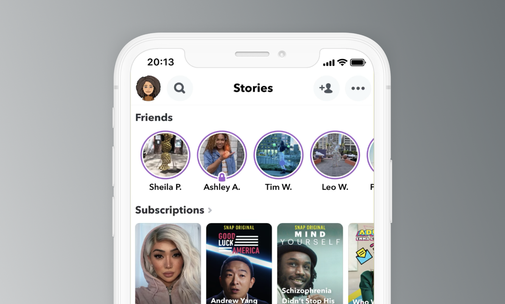
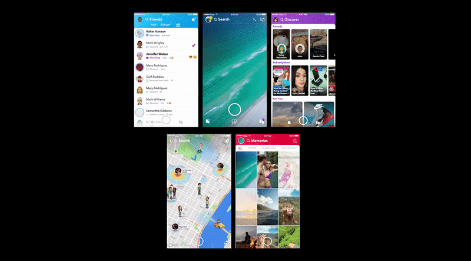
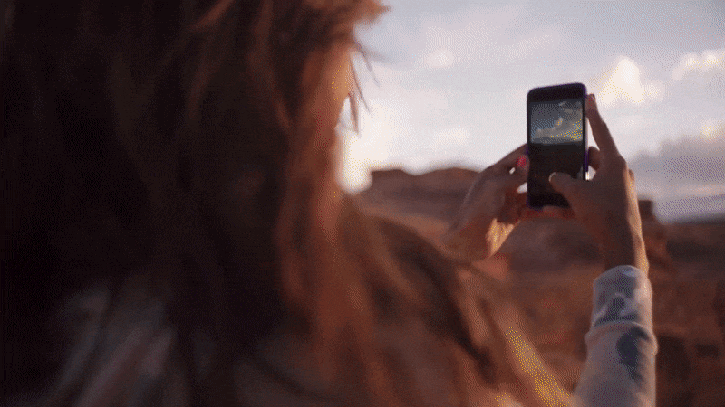
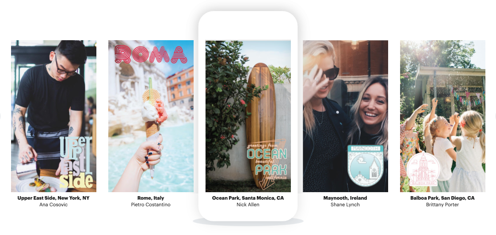

I worked at Snapchat for almost 6 years. While I was there, I designed products and features that were enjoyed by hundreds of millions of people around the world. When I started at Snap, our CEO Evan was still doing the app design (which took skeuomorphic cues from iOS 6), Stories didn't exist, and we had a few million users in the United States. I helped grow our userbase manyfold and expand internationally, developed our first ad products, ran a team, saw the company go public, and won our annual Design Challenge almost every year. Below are just a few products that I really enjoyed working on.

Stories
I was the lead designer on Stories for 5 years and designed the first version.
The product evolved out of the perceived user need for a "Send To All" button that would spam all their friends.
We built Stories to give users the ability to broadcast what they were doing in the moment.
As time went on, we'd add other Story formats allowing groups of users to post content.

System Design
When hardware changes, the software often must change as well. During my time at Snapchat, we saw dozens of new devices and aspect ratios that we had to design for.
Often, a new aspect ratio or generational change in a popular phone (in this instance iPhone 8 to iPhone X) is a good opportunity to refresh UI and improve functionality.
Over my time at Snap I worked on all core areas of the app.

Other Stories Products
In addition to the core Stories product, I led design on Official Stories (e.g. Verified Users) Custom Stories, Geo Stories, Private Stories, and Group Stories.
I also worked on Live Stories with another designer, and designed all the tooling and CMS required to allow the curation of millions of crowd-sourced Snaps.

Geofilters
Geofilters were designed to allow users to easily share their location, in way that felt more tailored to the location they were in.
It also felt a lot less try-hard to simply swipe on a cool filter to your Snap as opposed to typing in your exact location.
In addition to working on other camera tools, I built out and managed the entire Geofilters product, community-sourced pipeline, app UI, CMS and tooling.